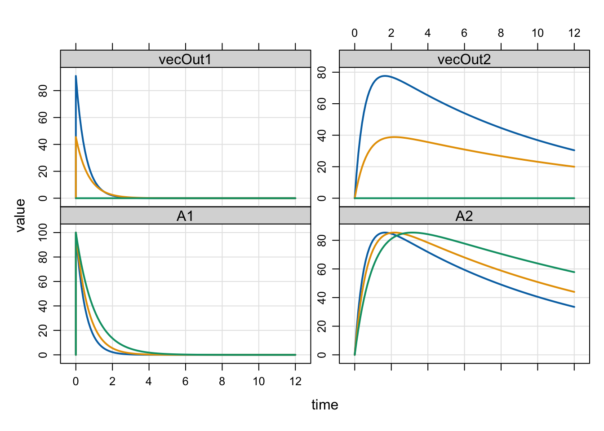

library(mrgsolve)
library(dplyr)
library(here)1 Define a function in R that transforms state variables
Stand-in function for transformation routine. This takes in the current values of the state variables, transforms them, and then returns the transformed values.
denom <- 1.1
run_transform <- function(states, scale) {
ans <- states * scale / denom
ans
}I’ve set this up so that you can pass config info for the transformation function from the model via a parameter that you can set. You can also pull objects from the global environment. So, you could load the transformation model into the R session and just call that from inside the you call from the model.
ImportantImportant
It’s important to note that you could implement this stand-in function way more efficiently if you coded it in C++ since there is overhead for calling back to R like this. The example is only a stand-in for more complicated code that you presumably could only access by calling back to R.
2 Read in the model
mod <- mread(
here("posts/2026-call-r-from-ode.mod"),
soloc = "build",
delta = 0.1, end = 12
)Building 2026-call-r-from-ode_mod ... done.2.1 Here’s the model code
NoteModel code: call-r-from-ode.mod
[ plugin ] Rcpp mrgx nm-vars
[ env ]
test <- try(
get("run_transform", envir = .GlobalEnv, mode = "function"),
silent = TRUE
)
if(inherits(test, "try-error")) {
stop("Could not load run_transform function")
}
neq <- 2
vecIn <- vector(mode = "numeric", length = neq+1)
vecOut <- vector(mode = "numeric", length = neq+1)
[ global ]
Rcpp::Function trfun = mrgx::mt_fun();
Rcpp::NumericVector vecIn;
Rcpp::NumericVector vecOut;
[ preamble ]
trfun = mrgx::get<Rcpp::Function>("run_transform");
vecIn = mrgx::get<Rcpp::NumericVector>("vecIn", self);
vecOut = mrgx::get<Rcpp::NumericVector>("vecOut", self);
[ param ]
CL = 1
V = 20
KA = 1
SCALE = 0
[ cmt ] @number 2
[ des ]
for(local_int i=1; i<=_nEQ; ++i) {
vecIn(i) = A(i);
}
vecOut = trfun(vecIn, SCALE);
DADT(1) = -KA * (A(1) + vecOut(1));
DADT(2) = KA * (A(1) + vecOut(1)) - (CL/V) * (A(2) + vecOut(2));
[ error ]
for(local_int i=1; i<=_nEQ; ++i) {
vecIn(i) = A(i);
}
vecOut = trfun(vecIn, SCALE);
capture vecOut1 = vecOut.at(1);
capture vecOut2 = vecOut.at(2);Notes
- Some code in
[env]to verify we can find the transformation function.
- Vectors to send state variables into and out of the transformation function are initialized in
[env]too.
- The vectors have zero-based indexing; I’ve made them one longer so we can ignore the
0position, but this isn’t required.
- All
Rcppobjects need to be declared globally, then assigned inside a model function; we do this in[global]and[preamble], respectively.
- The transformation function gets called every time the ode block is called.
- I call the transformation function one more time in
[error]to get the transformed values for final states after the system advances; you don’t have to do this.
3 Simulate
Try running the model with a couple different values of SCALE; these values will be passed thorugh the model back to run_transform().
id <- expand.idata(SCALE = c(1, 0.5, 0))
id ID SCALE
1 1 1.0
2 2 0.5
3 3 0.0out <- mrgsim(mod, idata = id, events = ev(amt = 100))4 Output
out Model: 2026-call-r-from-ode_mod
Dim: 366 x 6
Time: 0 to 12
ID: 3
ID time A1 A2 vecOut1 vecOut2
1: 1 0.0 0.00 0.00 0.00 0.00
2: 1 0.0 100.00 0.00 90.91 0.00
3: 1 0.1 82.62 17.29 75.11 15.72
4: 1 0.2 68.26 31.42 62.06 28.56
5: 1 0.3 56.40 42.92 51.27 39.02
6: 1 0.4 46.60 52.27 42.36 47.52
7: 1 0.5 38.50 59.83 35.00 54.39
8: 1 0.6 31.81 65.92 28.92 59.93plot(out)